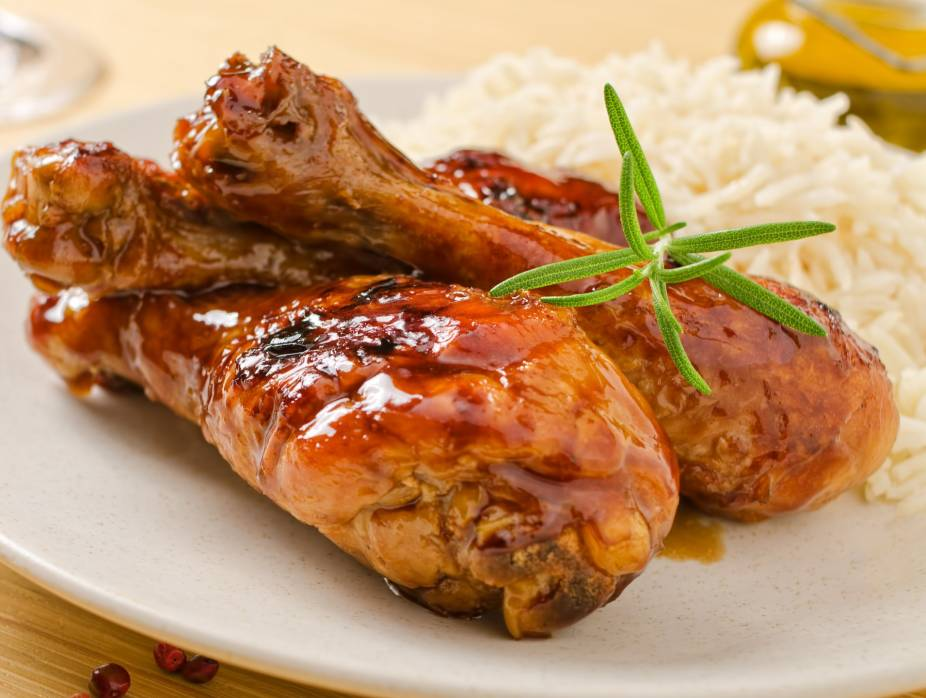

Chicken Taste

Your Tasty Chicken
Hello! Dear Followers...
Today, I hereby bring to you guys some sweet chicken flavor
So relax and enjoy your delicious chicken spice
Ingredients Required
- 1 whole chicken (or chicken pieces such as drumsticks, thighs, wings e.t.c)
- Salt
- Black pepper
- Curry powder
- Thyme
- Paprika
- Garlic (fresh or powder)
- Ginger (fresh or powder)
- Onion (fresh or powder)
- Seasoning cubes or seasoning powder
- Vegetable oil or olive oil
- Chilli pepper or cayenne pepper
- Fresh parsley or cilantro
Steps For Making Our Tasty Chicken
- Wash and cut the chicken into pieces, then season it with salt, black pepper,
curry powder, thyme, paprika, garlic, ginger, onion, and seasoning cubes
- Mix the seasoning well so they can coat every piece of the chicken evenly
- Allow the chicken to marinate for at least 30 minutes so it absorbs the flavor
- Heat the vegtable oil in a pan, or preheat the oven if you are baking the chicken
- Cook the chicken by frying, grilling or baking until it is fully cooked,
golden brown, and tender
- Garnish with fresh parsley or cilantro,then serve the chicken while its still hot